2.3 看门狗驱动
看门狗工作原理
看门狗是为了保障系统在因为某些错误导致挂起时，用来恢复系统所设计的一个硬件．其内部有个定时器，如果在定时器超时时间内，没有周期性地去"喂"（通常以设置某个寄存器，或者拉升/低某个引脚的形式）看门狗，则会导致看门狗重启整个系统．所以，从用户使用的角度来看，用户通常是会设计一个周期性"喂"看门狗的程序，如果内核崩溃恐慌导致系统挂起，则该程序无法继续"喂"狗，看门狗超时导致系统重启．

飞腾派Linux源码中的看门狗操作接口实现
如上所述，一个看门狗驱动，至少需要提供让用户可以设置超时，启动/关闭看门狗，"喂＂狗等等的接口．因此，在飞腾派Linux内核源码的include/linux/watchdog.h文件中，我们可以看到这样的定义
/** struct watchdog_ops - The watchdog-devices operations
*
* @owner: The module owner.
* @start: The routine for starting the watchdog device.
* @stop: The routine for stopping the watchdog device.
* @ping: The routine that sends a keepalive ping to the watchdog device.
* @status: The routine that shows the status of the watchdog device.
* @set_timeout:The routine for setting the watchdog devices timeout value (in seconds).
* @set_pretimeout:The routine for setting the watchdog devices pretimeout.
* @get_timeleft:The routine that gets the time left before a reset (in seconds).
* @restart: The routine for restarting the machine.
* @ioctl: The routines that handles extra ioctl calls.
*
* The watchdog_ops structure contains a list of low-level operations
* that control a watchdog device. It also contains the module that owns
* these operations. The start function is mandatory, all other
* functions are optional.
*/
struct watchdog_ops {
struct module *owner;
/* mandatory operations */
int (*start)(struct watchdog_device *);
/* optional operations */
int (*stop)(struct watchdog_device *);
int (*ping)(struct watchdog_device *);
unsigned int (*status)(struct watchdog_device *);
int (*set_timeout)(struct watchdog_device *, unsigned int);
int (*set_pretimeout)(struct watchdog_device *, unsigned int);
unsigned int (*get_timeleft)(struct watchdog_device *);
int (*restart)(struct watchdog_device *, unsigned long, void *);
long (*ioctl)(struct watchdog_device *, unsigned int, unsigned long);
};
上面的结构体描述了，Linux下，一个看门狗设备需要提供的操作接口．而这些，由驱动实现．本节我们只会分析其中的start，set_timeout和ping接口，其它接口的说明，超出了本节范围，其中ping方法既是用来给用户提供一个"喂"狗的接口的，而另两个，顾名思义，分别是启动看门狗和设置看门狗超时的功能的．
接下来，我们会结合飞腾派的文档和Linux内核源码，分析如何在Arceos中实现对应的接口．要说明的是，飞腾派中的看门狗的设计遵照ARM-Sbsa规范，其驱动实现位于drivers/watchdog/sbsa-gwdt下．我们可以看到其中对应的方法实现，分别是
static const struct watchdog_ops sbsa_gwdt_ops = {
.owner = THIS_MODULE,
.start = sbsa_gwdt_start,
.stop = sbsa_gwdt_stop,
.ping = sbsa_gwdt_keepalive,
.set_timeout = sbsa_gwdt_set_timeout,
.get_timeleft = sbsa_gwdt_get_timeleft,
};
继续看下去，我们会发现sbsa_gwdt_start，sbsa_gwdt_set_timeout和sbsa_gwdt_keepalive三个函数的实现异常简单，没有太多"魔法"在里面．如下
static void sbsa_gwdt_reg_write(u64 val, struct sbsa_gwdt *gwdt)
{
if (gwdt->version == 0)
writel((u32)val, gwdt->control_base + SBSA_GWDT_WOR);
else
lo_hi_writeq(val, gwdt->control_base + SBSA_GWDT_WOR);
}
/*
* watchdog operation functions
*/
static int sbsa_gwdt_set_timeout(struct watchdog_device *wdd,
unsigned int timeout)
{
struct sbsa_gwdt *gwdt = watchdog_get_drvdata(wdd);
wdd->timeout = timeout;
timeout = clamp_t(unsigned int, timeout, 1, wdd->max_hw_heartbeat_ms / 1000);
if (action)
sbsa_gwdt_reg_write((u64)gwdt->clk * timeout, gwdt);
else
/*
* In the single stage mode, The first signal (WS0) is ignored,
* the timeout is (WOR * 2), so the WOR should be configured
* to half value of timeout.
*/
sbsa_gwdt_reg_write(((u64)gwdt->clk / 2) * timeout, gwdt);
return 0;
}
static int sbsa_gwdt_keepalive(struct watchdog_device *wdd)
{
struct sbsa_gwdt *gwdt = watchdog_get_drvdata(wdd);
/*
* Writing WRR for an explicit watchdog refresh.
* You can write anyting (like 0).
*/
writel(0, gwdt->refresh_base + SBSA_GWDT_WRR);
return 0;
}
static int sbsa_gwdt_start(struct watchdog_device *wdd)
{
struct sbsa_gwdt *gwdt = watchdog_get_drvdata(wdd);
/* writing WCS will cause an explicit watchdog refresh */
writel(SBSA_GWDT_WCS_EN, gwdt->control_base + SBSA_GWDT_WCS);
return 0;
}
本质上，是对SBSA_GWDT_WOR，SBSA_GWDT_WRR和SBSA_GWDT_WCS三个寄存器的操作．关于这些寄存器的描述，我们可以在飞腾派软件软件编程手册V1.0上找到．
WDT_WRR (0x0000)
| 域 | 位 | 读写 | 复位值 | 描述 |
|---|---|---|---|---|
| WDT_WRR | 31:0 | RW | 0x0 | Watchdog更新寄存器．写操作会重新开始看门狗计数，读返回0 |
WDT_WOR (0x1008)
| 域 | 位 | 读写 | 复位值 | 描述 |
|---|---|---|---|---|
| WDT_WOR | 31:0 | RO | 0x3000000 | Watchdog清除寄存器 |
WDT_WCS (0x1000)
| 域 | 位 | 读写 | 复位值 | 描述 |
|---|---|---|---|---|
| reserved | 31:3 | RO | 0x0 | 保留 |
| Ws1 | 2 | RO | 0x0 | 二次超时，读返回当前ws1的值 |
| Ws0 | 1 | RO | 0x0 | 一次超时，读返回当期ws0的值 |
| Wdt_en | 0 | RW | 0x0 | Watchdog使能信号，高有效，常规复位和热保护都会清0． |
对该三个寄存器的写入，会直接导致sys_cnt+WOR寄存器储存的值被更新到WCV寄存器中．而sys_cnt的计数值大于当前WCV寄存器存储的比较值则会导致看门狗超时．
看门狗驱动的Rust实现
为了让Arceos支持对这三个寄存器进行读取写入，我们需要将三个寄存器的地址空间映射到内核虚拟空间中，在configs/platforms/aarch64-phytium-pi.toml文件中，修改mmio-regions部分，添加上对看门狗的支持.
#
# Device specifications
#
[devices]
# MMIO regions with format (`base_paddr`, `size`).
mmio-regions = [
[0x2800_C000, 0x1000], # UART 0
[0x2800_D000, 0x1000], # UART 1
[0x2800_E000, 0x1000], # UART 2
[0x2800_F000, 0x1000], # UART 3
[0x3000_0000, 0x800_0000], # other devices
[0x4000_0000, 0x1000_0000], # Pcie ecam
[0x5800_0000, 0x2800_0000], # 32-bit MMIO space
[0x2801_4000, 0x2000], # MIO0 - I2C
[0x2801_6000, 0x2000], # MIO1 - I2C
[0x2801_8000, 0x2000], # MIO2 - I2C
[0x2801_A000, 0x2000], # MIO3 - I2C
[0x2801_C000, 0x2000], # MIO4 - I2C
[0x000_2803_4000, 0x1000], # GPIO0
[0x000_2803_5000, 0x1000], # GPIO1
[0x000_2803_6000, 0x1000], # GPIO2
[0x000_2803_7000, 0x1000], # GPIO3
[0x000_2803_8000, 0x1000], # GPIO4
[0x000_2803_9000, 0x1000], # GPIO5
[0x000_2804_0000, 0x2000], # WDT0
[0x000_2804_2000, 0x2000], # WDT1
]
# Watchdog Address
wdt0-paddr = 0x2804_0000 # uint
wdt1-paddr = 0x2804_2000 # uint
在axhal/src/platform/aarch64_common文件夹下创建sbsa_wdt.rs文件，之后我们就可以参照之前linux源码中的实现，来完成看门狗使能，设置超时和关闭看门狗的功能，因此，我们需要实现如下接口：
| 接口名称 | 参数 | 调用范例 | 简要功能说明 |
|---|---|---|---|
| start_watchdog | 无 | start_watchdog() | 启动看门狗 |
| set_watchdog_timeout | timeout | set_watchdog_timeout(6) | 设置看门狗超时，参数单位为秒 |
| stop_watchdog | 无 | stop_watchdog() | 停止看门狗 |
| ping_watchdog | 无 | ping_watchdog() | 喂看门狗，重置计数器 |
#![allow(unused)] fn main() { /// Start Watchdog pub fn start_watchdog() { axlog::debug!("starting watchdog"); let wdt = WDT.lock(); unsafe { // Enable Watchdog Timer core::ptr::write_volatile( (wdt.0 + SBSA_GWDT_WCS) as *mut u32, 0x1); } } pub fn set_watchdog_timeout(timeout: u32) { axlog::debug!("set watchdog timeout: {timeout}"); let clk = CNTFRQ_EL0.get(); let wdt = WDT.lock(); unsafe { core::ptr::write_volatile( (wdt.0 + SBSA_GWDT_WOR) as *mut u32, (clk * timeout as u64 / 2) as u32); } } pub fn stop_watchdog() { axlog::debug!("stopping watchdog"); let wdt = WDT.lock(); unsafe { // Disable Watchdog Timer core::ptr::write_volatile( (wdt.0 + SBSA_GWDT_WCS) as *mut u32, 0x0); } } pub fn ping_watchdog() { axlog::debug!("feeding watchdog"); let wdt = WDT.lock(); unsafe { // Write to Watchdog Timer Reset Register to reset the timer core::ptr::write_volatile( (wdt.0 + SBSA_GWDT_WRR) as *mut u32, 0); } } }
接下来，我们进行测试，我们可以选择在内核中启用看门狗，并设置超时时间为6秒，
#![allow(unused)] fn main() { super::aarch64_common::sbsa_wdt::set_watchdog_timeout(6); super::aarch64_common::sbsa_wdt::start_watchdog(); }
同时编写个测试应用
fn main() { println!("Hello, world!"); let mut count = 1usize; loop { println!("count {count}"); count += 1; axstd::thread::sleep(core::time::Duration::from_secs(1)); } }
可观察到如下现象，应用程序计时到第6秒时，设备重启了．